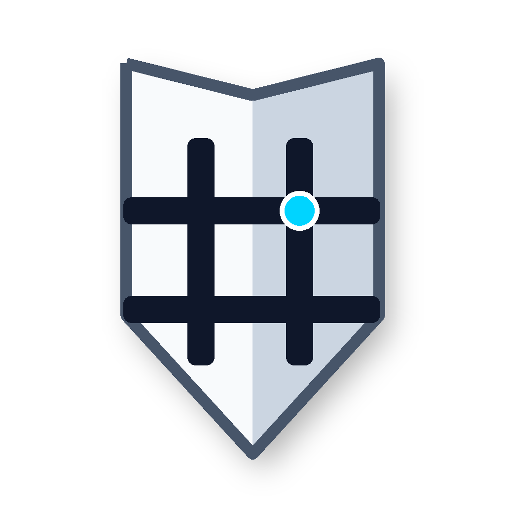

Semantic LLM Routing
Decouple your AI agents. AegisMesh uses Milvus Vector DB and LangChain4j to dynamically map complex tasks to the correct agent using MCP capability cards and cosine similarity.

Combine Multi-Agent Semantic Routing, Pure-Java WASM Extensibility, Omni Governance, and comprehensive AI Guardrails into one stateless architecture powered by Java 25.
Request Early Access Explore FeaturesDecouple your AI agents. AegisMesh uses Milvus Vector DB and LangChain4j to dynamically map complex tasks to the correct agent using MCP capability cards and cosine similarity.
Protect your Multi-Agent frameworks. Track FinOps AI token metrics, map LLM shadow IT, block prompt injections, and enforce Human-in-the-Loop (HITL) execution natively.
GitOps-driven RBAC, AST-based GraphQL limits, Data Loss Prevention (DLP), Prompt Injection prevention, BOLA protection for data streams, and Log4Shell payload interception.
Replace standalone tools with a unified DDD-driven control plane. Manage Kafka drift, execute consumer rewinds, safely explore PII-masked data, and prevent destructive schema mutations.
Bridge HTTP traffic natively to Kafka topics, RabbitMQ queues, and S3 buckets without writing backend middleware or fragile connector scripts.
Eliminate infrastructure bloat. Massive scalability with an embedded Infinispan grid and a Self-Provisioning GitOps Operator that manages K8s CRDs automatically.
Safely run custom logic at the edge. AegisMesh uses Chicory to execute WebAssembly binaries natively inside the JVM without JNI overhead, enabling ultra-low latency transformations.
Built using an aggressive Test-Driven Development (TDD) methodology. Continuous K6 soak testing and chaotic fault-tolerance simulation ensure ultimate gateway stability.